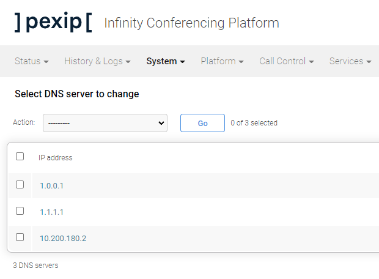
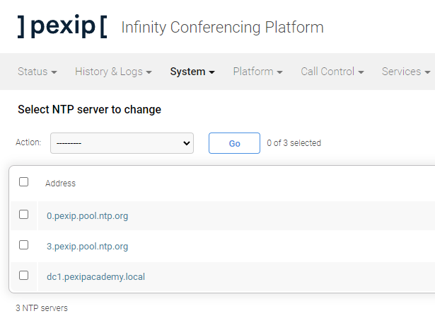
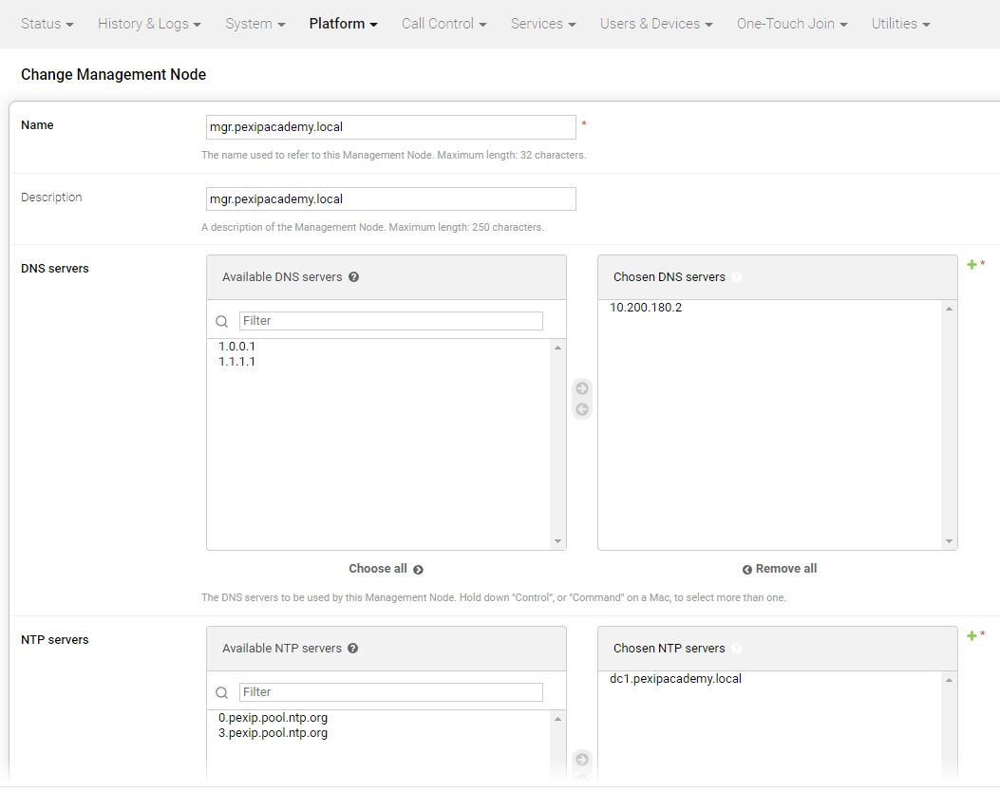
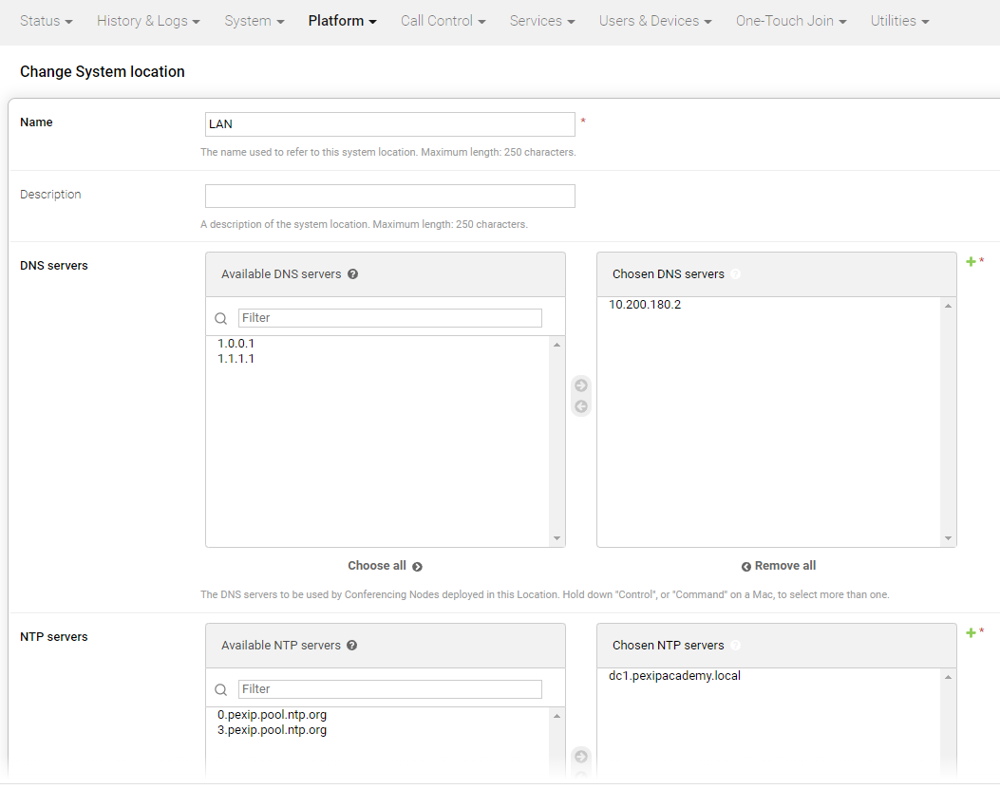
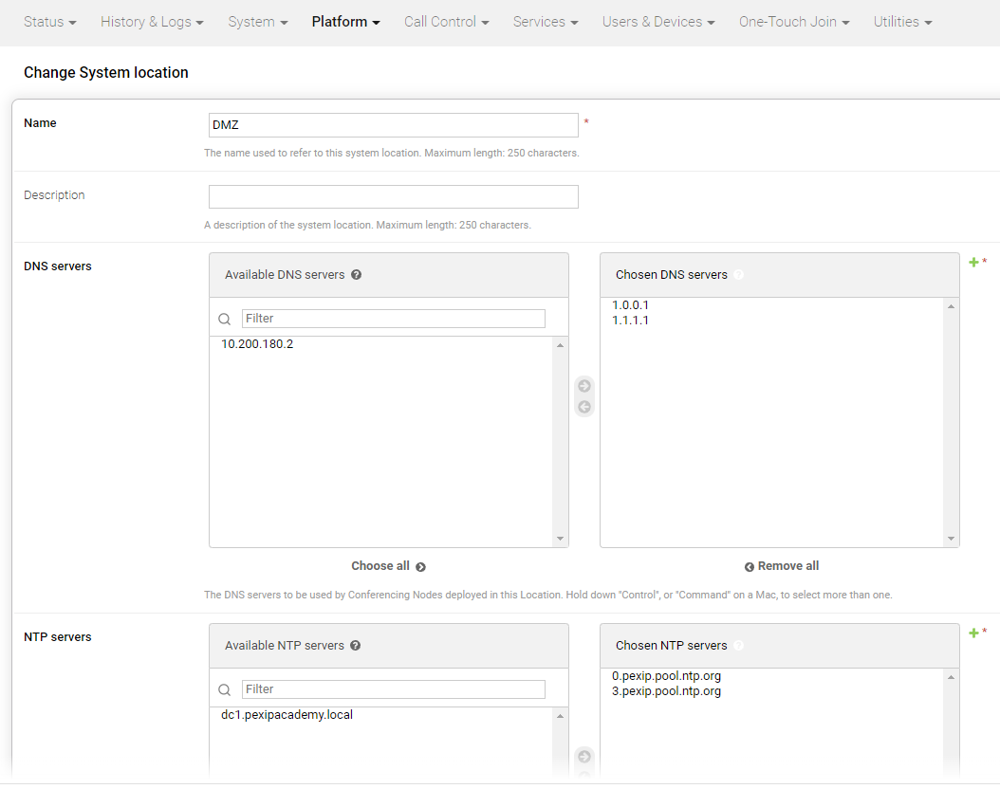

Suggested completion time: 15 minutes
Use section #4.1 and section #5of the lab sheet.
You might wish to re-watch the video regarding System Locations.
NOTE: a warning will tell you that "No transcoding resource available" is available in each location. We will fix that in the next step.
One day, perhaps soon, we will have a way to parse your Infinity deployment and tell you if your configuration matches the required design for this lab. Today, however, you need to check this manually.
Your system should match the screenshots seen below.
Screenshot of ALL the DNS servers configured on the system:

Screenshot of ALL the NTP servers configured on the system:

Screenshot of the DNS and NTP servers applied to the Management Node:

Screenshot of the DNS and NTP servers applied to the LAN location:

Screenshot of the DNS and NTP servers applied to the DMZ location:
